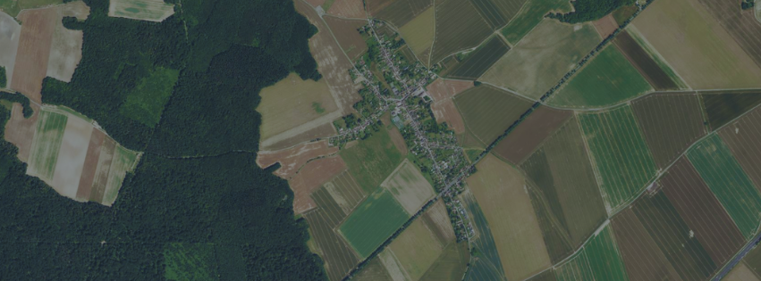

Reunion publique de printemps et feuille de route 2026
La commune presente les priorites de l'annee, les travaux a venir et les actions retenues pour le cadre de vie, avec un temps d'echange dedie aux habitants.
Voir le detail
Site officiel de la commune
Bienvenue a Nom village
Une commune entre patrimoine, vie locale et qualite de cadre de vie.
A la une
Vie du village
Retrouvez les informations municipales, les temps forts associatifs et les annonces utiles de la commune de Nom village.
La commune presente les priorites de l'annee, les travaux a venir et les actions retenues pour le cadre de vie, avec un temps d'echange dedie aux habitants.
Voir le detail
Des plages d'accueil plus lisibles pour les demarches courantes.
Voir le detail
Une mobilisation locale pour entretenir les espaces communs.
Voir le detail

Explorer
Reperez rapidement la mairie, les equipements communaux, les espaces naturels et les points d'interet du village.
Voir la carte du villageA consulter
Bulletins et documents


Application citoyenne
Suivez les actualites de Nom village, les alertes municipales et les infos utiles directement sur votre smartphone.